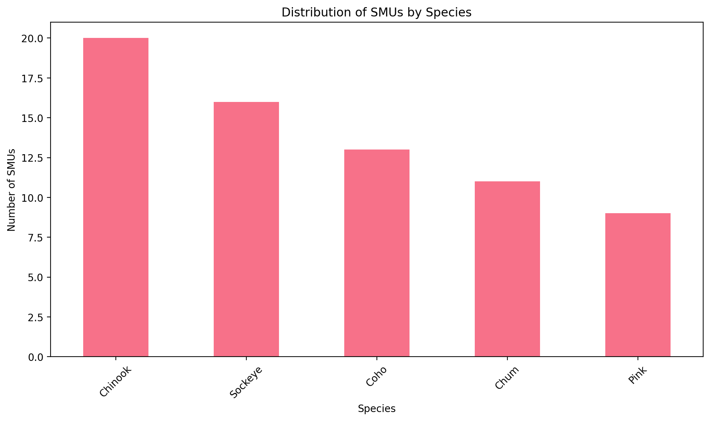

Attempting to read file: ../assets/data/smu_profiles.xlsx
File exists: True
File is readable: True
Successfully loaded 69 SMU recordsStock Management Unit Profiles
Overview
This page contains profiles of Stock Management Unit Profiles for Pacific salmon conservation. The data includes information on 69 stock management units.
Search and Filter
SMU Data Table
Click each row to view details
| SMU Name | Species | Region | SMU Status | Avg. Abundance | Avg. Catch | Avg. ER |
|---|---|---|---|---|---|---|
| ALSEK CHINOOK SALMON | Chinook | YUKON TRANSBOUNDARY | N/A | N/A | N/A | N/A |
| ALSEK COHO SALMON | Coho | YUKON TRANSBOUNDARY | N/A | N/A | N/A | N/A |
| ALSEK SOCKEYE SALMON | Sockeye | YUKON TRANSBOUNDARY | N/A | N/A | N/A | N/A |
| CENTRAL COAST CHINOOK SALMON | Chinook | NORTH COAST | Uncertain | N/A | N/A | Atnarko: 0.45 |
| CENTRAL COAST CHUM SALMON | Chum | NORTH COAST | N/A | N/A | N/A | 0.4 |
| CENTRAL COAST COHO SALMON | Coho | NORTH COAST | Uncertain | N/A | N/A | 0.1 |
| CENTRAL COAST PINK SALMON | Pink | NORTH COAST | N/A | N/A | N/A | 0.2 |
| CENTRAL COAST SOCKEYE SALMON | Sockeye | NORTH COAST | N/A | N/A | N/A | N/A |
| ECVI/MAINLAND PINK SALMON - EVEN | Pink | SOUTH COAST | N/A | N/A | N/A | N/A |
| ECVI/MAINLAND PINK SALMON - ODD | Pink | SOUTH COAST | N/A | N/A | N/A | N/A |
| ECVI/MAINLAND SOCKEYE SALMON | Sockeye | SOUTH COAST | N/A | N/A | N/A | N/A |
| FRASER CHUM SALMON | Chum | FRASER AND INTERIOR | Cautious | N/A | N/A | N/A |
| FRASER FALL RUN 41 CHINOOK SALMON | Chinook | FRASER AND INTERIOR | GR | N/A | N/A | 0.25 |
| FRASER PINK SALMON - ODD | Pink | FRASER AND INTERIOR | Healthy | N/A | N/A | 0.5533531549388834 |
| FRASER SOCKEYE SALMON - EARLY STUART | Sockeye | FRASER AND INTERIOR | Fraser Sockeye - Early Stuart: 1 Red | N/A | N/A | 0.21084950841930228 |
| FRASER SOCKEYE SALMON - EARLY SUMMER | Sockeye | FRASER AND INTERIOR | Fraser Sockeye - Early Summer: 2 Red 4 amber 3 amber/green 1 green | N/A | N/A | 0.3044679073011699 |
| FRASER SOCKEYE SALMON - LATE | Sockeye | FRASER AND INTERIOR | Critical | N/A | N/A | 0.3743142281046951 |
| FRASER SOCKEYE SALMON - SUMMER | Sockeye | FRASER AND INTERIOR | Critical | N/A | N/A | 0.3543114665931571 |
| FRASER SPRING RUN 42 CHINOOK SALMON | Chinook | FRASER AND INTERIOR | RED | N/A | N/A | 0.22 |
| FRASER SPRING RUN 52 CHINOOK SALMON | Chinook | FRASER AND INTERIOR | DD/RED | N/A | N/A | 0.3 |
| FRASER SUMMER RUN 41 CHINOOK SALMON | Chinook | FRASER AND INTERIOR | DD/GR | N/A | N/A | 0.45 |
| FRASER SUMMER RUN 52 CHINOOK SALMON | Chinook | FRASER AND INTERIOR | DD/AMB/RED | N/A | N/A | 0.3 |
| HAIDA GWAII CHINOOK SALMON | Chinook | NORTH COAST | Uncertain | N/A | N/A | N/A |
| HAIDA GWAII CHUM SALMON | Chum | NORTH COAST | N/A | N/A | N/A | N/A |
| HAIDA GWAII COHO SALMON | Coho | NORTH COAST | Uncertain | N/A | N/A | 0.1 |
| HAIDA GWAII PINK SALMON | Pink | NORTH COAST | N/A | N/A | N/A | N/A |
| HAIDA GWAII SOCKEYE SALMON | Sockeye | NORTH COAST | N/A | N/A | N/A | N/A |
| INNER SOUTH COAST CHUM SALMON | Chum | SOUTH COAST | Cautious | N/A | N/A | N/A |
| INTERIOR FRASER COHO SALMON | Coho | FRASER AND INTERIOR | Cautious | N/A | N/A | 0.11 |
| JOHNSTONE STRAIT/MAINLAND INLET COHO SALMON | Coho | SOUTH COAST | N/A | N/A | N/A | N/A |
| LOWER FRASER COHO SALMON | Coho | FRASER AND INTERIOR | N/A | N/A | N/A | 0.15 |
| LOWER GEORGIA STRAIT CHINOOK SALMON | Chinook | SOUTH COAST | TBD | N/A | N/A | 0.63 |
| MAINLAND INLET CHINOOK SALMON | Chinook | SOUTH COAST | N/A | N/A | N/A | N/A |
| MIDDLE GEORGIA STRAIT CHINOOK SALMON | Chinook | SOUTH COAST | N/A | N/A | N/A | N/A |
| NASS CHINOOK SALMON | Chinook | NORTH COAST | Uncertain | N/A | N/A | N/A |
| NASS CHUM SALMON | Chum | NORTH COAST | N/A | N/A | N/A | N/A |
| NASS COHO SALMON | Coho | NORTH COAST | Uncertain | N/A | N/A | 0.12 |
| NASS PINK SALMON | Pink | NORTH COAST | Healthy | N/A | N/A | Nass: 0.19 |
| NASS SOCKEYE SALMON | Sockeye | NORTH COAST | Healthy | N/A | N/A | Nass: 0.42 |
| OKANAGAN CHINOOK SALMON | Chinook | FRASER AND INTERIOR | Critical | N/A | N/A | N/A |
| OKANAGAN SOCKEYE SALMON | Sockeye | FRASER AND INTERIOR | N/A | N/A | N/A | N/A |
| PORCUPINE CHINOOK SALMON | Chinook | YUKON TRANSBOUNDARY | N/A | N/A | N/A | N/A |
| PORCUPINE CHUM SALMON | Chum | YUKON TRANSBOUNDARY | N/A | N/A | N/A | N/A |
| PORCUPINE COHO SALMON | Coho | YUKON TRANSBOUNDARY | N/A | N/A | N/A | N/A |
| RIVERS/SMITH SOCKEYE SALMON | Sockeye | NORTH COAST | N/A | N/A | N/A | Rivers: 0.05 |
| SKEENA - NASS CHUM COASTAL | Chum | NORTH COAST | N/A | N/A | N/A | N/A |
| SKEENA CHINOOK SALMON | Chinook | NORTH COAST | Uncertain | N/A | N/A | Skeena: 0.44 |
| SKEENA CHUM SALMON | Chum | NORTH COAST | N/A | N/A | N/A | N/A |
| SKEENA COHO SALMON | Coho | NORTH COAST | Uncertain | N/A | N/A | 0.54 |
| SKEENA PINK SALMON | Pink | NORTH COAST | Healthy | N/A | N/A | Skeena: 0.49 |
| SKEENA SOCKEYE SALMON | Sockeye | NORTH COAST | Healthy | N/A | N/A | 0.55 |
| STIKINE CHINOOK SALMON | Chinook | YUKON TRANSBOUNDARY | N/A | N/A | N/A | N/A |
| STIKINE COHO SALMON | Coho | YUKON TRANSBOUNDARY | N/A | N/A | N/A | N/A |
| STIKINE SOCKEYE SALMON | Sockeye | YUKON TRANSBOUNDARY | Healthy | N/A | N/A | N/A |
| STRAIT OF GEORGIA COHO SALMON | Coho | SOUTH COAST | N/A | N/A | N/A | 0.06 |
| TAKU CHINOOK SALMON | Chinook | YUKON TRANSBOUNDARY | N/A | N/A | N/A | N/A |
| TAKU COHO SALMON | Coho | YUKON TRANSBOUNDARY | N/A | N/A | N/A | N/A |
| TAKU SOCKEYE SALMON | Sockeye | YUKON TRANSBOUNDARY | N/A | N/A | N/A | N/A |
| TRANSBOUNDARY CHUM SALMON | Chum | YUKON TRANSBOUNDARY | N/A | N/A | N/A | N/A |
| TRANSBOUNDARY PINK SALMON | Pink | YUKON TRANSBOUNDARY | N/A | N/A | N/A | N/A |
| UPPER GEORGIA STRAIT CHINOOK SALMON | Chinook | SOUTH COAST | DD | N/A | N/A | 0.39 |
| WCVI - BARKLEY SOCKEYE SALMON | Sockeye | SOUTH COAST | Uncertain | N/A | N/A | GCL: 0.05 |
| WCVI - OTHER SOCKEYE SALMON | Sockeye | SOUTH COAST | N/A | N/A | N/A | 0.05 |
| WCVI CHINOOK SALMON | Chinook | SOUTH COAST | Critical | N/A | N/A | 0.65 |
| WCVI CHUM SALMON | Chum | SOUTH COAST | N/A | N/A | N/A | 0.2 |
| WCVI COHO SALMON | Coho | SOUTH COAST | N/A | N/A | N/A | 0.11 |
| WCVI PINK SALMON | Pink | SOUTH COAST | N/A | N/A | N/A | N/A |
| YUKON CHINOOK SALMON | Chinook | YUKON TRANSBOUNDARY | Critical | N/A | N/A | N/A |
| YUKON CHUM SALMON | Chum | YUKON TRANSBOUNDARY | N/A | N/A | N/A | N/A |
Data Export
Export Data
Summary Statistics
